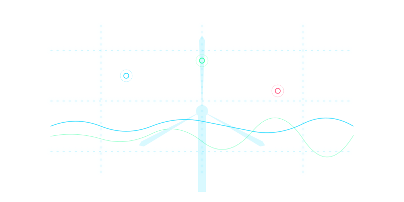
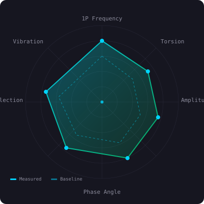

When monitoring detects a problem — who confirms it?
ALIDA brings physical validation into wind turbine operations, closing the gap between data and decision.
Tested in real industrial environments · Rotor & blade focus · OEM-relevant workflows
Detection is not validation
Monitoring platforms are good at detecting anomalies. But they often fail at answering the only question that matters:
Is this real — and what should we do about it?
SCADA signals without structural validation
Data shows deviations but no physical confirmation of what's happening at the rotor.
Unclear root causes
Anomaly signals without physical interpretation leave teams guessing at what's actually wrong.
OEM escalations
Without validated evidence, escalations to OEMs lack the data needed for swift resolution.
Costly and unfocused inspections
Inspections triggered without structural context waste time and budget on broad, undirected checks.
Uncertainty in O&M decisions
Operations teams are forced to decide with incomplete information, accepting risk or over-spending.
This gap creates delay, cost, and decision uncertainty.
Today's systems stop at detection
SCADA and performance analytics can surface anomalies, but they rarely provide a structured way to validate them physically at component level — especially on rotor and blade systems.
Digital Detection
SCADA · CMS · Analytics Platforms
Physical Reality
Rotor · Blades · Structural Behavior
ALIDA is designed for this missing layer.
A validation layer for wind operations
ALIDA acts as a physical validation endpoint integrated into existing monitoring workflows.
Capture
Laser + video sensing. No turbine modification required.
Analyze
Rotor dynamics. 1P / imbalance / anomaly interpretation. AI-assisted signal analysis.
Validate
Structural confirmation. Actionable insight for O&M and engineering teams.
From anomaly signal to structural insight
Example: rotor imbalance detection in operating turbines.
- Operating RPM analysis
- 1P harmonic extraction
- Blade-specific bias estimation
- Evidence that supports targeted inspection and better decisions
From signal anomaly to physically validated structural insight.

Why it matters
When anomalies are not validated, maintenance becomes reactive, inspections become broader and more expensive, decisions slow down, and confidence in analytics decreases.
Without ALIDA
- Reactive maintenance driven by uncertain signals
- Broader, more expensive inspections
- Slower decision-making across the chain
- Decreased confidence in analytics output
With ALIDA
- Faster, evidence-based decisions
- More targeted inspections with structural context
- Reduced uncertainty in maintenance planning
- Better coordination across monitoring, engineering, and O&M
Designed for real-world integration
ALIDA is designed to fit existing industrial workflows, not replace them.
Portable diagnostic kit
Self-contained field unit for on-site rotor validation campaigns.
On-demand validation campaign
Deploy ALIDA for targeted fleet assessments following anomaly detection.
Continuous monitoring extension
Integrate as a persistent validation layer for critical assets.
Integration with SCADA / analytics
Connect ALIDA outputs to existing monitoring dashboards for unified decision support.
No replacement. A validation layer on top of existing systems.
Not another monitoring tool
ALIDA is the missing link between detection and decision in wind operations.
Monitoring tells you something may be wrong. ALIDA helps confirm what is happening physically — and what to do next.
Built in industrial context
Developed around real industrial problems in rotor analytics and structural validation.
Activities are being explored in OEM-relevant environments, including initiatives connected to Vestas-related contexts.
Built by people who understand complex industrial systems
Founder
AI Architect with experience across industrial AI, IoT, and complex real-world environments.
Experience spanning production-grade AI systems, industrial analytics, and technical delivery in demanding contexts.
Selected for Free Electrons shortlist
We are currently exploring pilot discussions with utilities, partners, and OEM-relevant stakeholders.